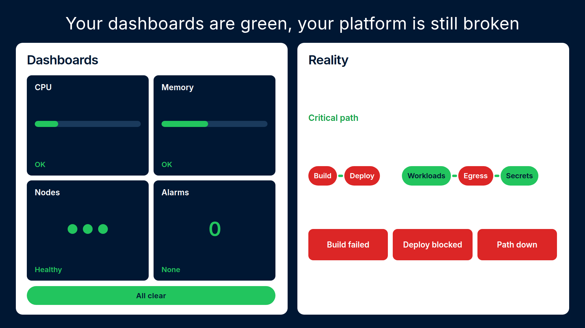

Your dashboards are green, your platform is still broken
Everything looks fine: CPU usage is normal, memory usage is normal, nodes are healthy, no alarm is firing. And yet your tenants can't build or deploy their applications, users are getting errors, or a critical integration stopped working.
This is not a far-fetched scenario, in fact I witnessed such situations myself several times. Dashboards can tell you that your infrastructure is healthy without telling you that your platform is actually working. What is easy to measure is usually what gets measured: CPU, memory, disks, network utilisation, nodes. Those signals get packaged into dashboards and alerts and often this is considered "observability done". But they don't necessarily answer what really matters: can the platform do what it is supposed to do?
In order to answer that question, the monitoring needs to go beyond basic, readily available metrics, and cover the critical paths within the platform. This is typically done through synthetic checks (sometimes called "canaries") that exercise functions within the platform end-to-end, for example:
- Can a tenant build its applications?
- Can a tenant deploy its applications?
- Can users reach the workloads?
- Can workloads reach external or on-prem services?
- Can an application retreive its secrets?
- Are the observability functions themselves working?
You want your platform to continuously prove that it works, rather than inferring a health status from individual components. For example, infrastructure-level monitoring might tell you that the load balancer is healthy, while a canary can tell you that users still can't reach a tenant application. Ideally, such a canary should help identify which part of the path is failing.
In a multi-tenant platform, the problem is compounded by the fact that the platform itself can show as healthy, while a particular tenant is experiencing problems. This could be caused by:
- a routing issue
- an IAM problem
- incorrect configuration
- an egress restriction
- a broken pipeline
Therefore, you also need tenant-level canaries to continuously verify that tenant-related functions are up and running.
This brings us to alerting, where again the easiest things to measure are the ones that are dealt with: alerts on high CPU, high memory, disks getting full, etc. Such alerts have their place, but you ideally want to identify a small number of business and platform critical paths and set alerts on those, typically using the canaries discussed above. Adding more and more alerts is usually counter-productive because drowning your team in alerts is the best way to make sure the important ones are ignored.
In observability and alerting, less is more.
With this in mind, here are questions I would ask as a CTO or Head of Platform:
- Can you tell me when the platform stops doing its job, not just when a component fails?
- Can you prove that your critical tenant journeys work end-to-end?
- Do we have visibility into tenant health as well as platform health?
- Are there any alerts being routinely ignored by the platform team or the incident response team?
Green dashboards are reassuring, but they are not proof that the platform is doing its job. The best observability systems don't simply tell you that your infrastructure is alive. They tell you whether your platform is delivering the capabilities your tenants and their users depend on.
When was the last time your platform actually proved that its most important paths were working?